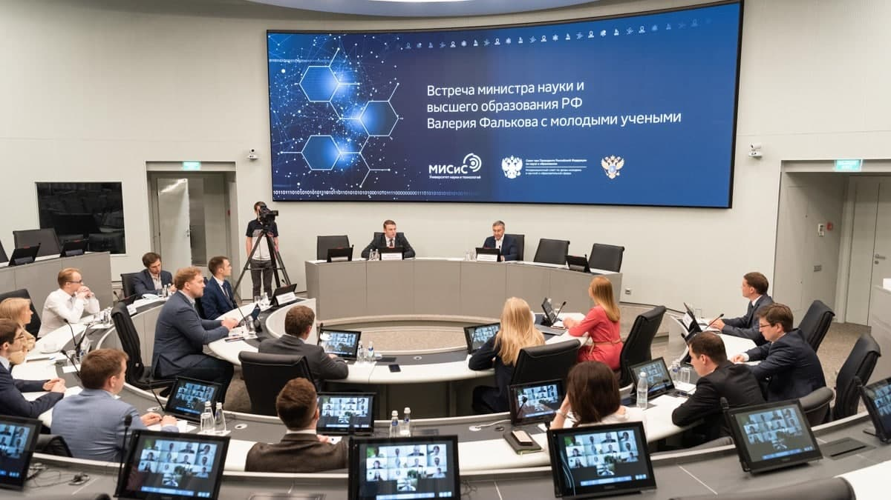
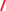

<section class="news section grid-container">
  <h2 class="header news-heading">Новости</h2>
  <div class="news-buttons"></div>
  <div class="news-container grid-x grid-margin-x grid-margin-y">
    <!-- <div class="news-item cell small-12 medium-6">
            <div class="news-item--img ${item.img}">
                
            </div>
            <div class="label-date">
              <p class="label-date__label">${item.category}</p>
              
              <p class="label-date__date">${item.date}</p>
            </div>
            
            <div class="news-item__text">
              ${item.text}
            </div>
            <a href="news.html" class="news-item__btn news-item__btn--main">
              подробнее
            </a>
        </div> -->
  </div>
  <button id="loadmore" class="btn-main btn-main__news">
    смотреть еще
  </button>
</section>

<script>
  // NEWS FILTERING
  const menu = [
    {
      id: 1,
      category: 'Наука и технологии',
      img: 'img-news-1.jpg',
      date: '22 июля 2020',
      text:
        'Университетам - участникам ПСАЛ будут выделены дополнительные средства на развитие науки',
    },
    {
      id: 2,
      category: 'Регионы',
      img: 'img-news-2.jpg',
      date: '21 июля 2020',
      text: 'Старт новой Программы поддержки вузов будет дан в конце сентября',
    },
    {
      id: 3,
      category: 'Таланты',
      img: 'img-news-3.jpg',
      date: '15 июля 2020',
      text: 'Особые условия для творческих вузов',
    },
    {
      id: 4,
      category: 'Партнерство',
      img: 'img-news-4.jpg',
      date: '10 июля 2020',
      text:
        'Дизайн Программы стратегического академического лидерства обсужден с университетским и академическим сообществом',
    },
    {
      id: 5,
      category: 'События',
      img: 'img-news-6.jpg',
      date: '10 июля 2020',
      text:
        'Новый проект господдержки вузов учтет позитивный опыт предшествующих программ',
    },
    {
      id: 1,
      category: 'Наука и технологии',
      img: 'img-news-1.jpg',
      date: '22 июля 2020',
      text:
        'Университетам - участникам ПСАЛ будут выделены дополнительные средства на развитие науки',
    },
    {
      id: 2,
      category: 'Регионы',
      img: 'img-news-2.jpg',
      date: '21 июля 2020',
      text: 'Старт новой Программы поддержки вузов будет дан в конце сентября',
    },
    {
      id: 3,
      category: 'Таланты',
      img: 'img-news-3.jpg',
      date: '15 июля 2020',
      text: 'Особые условия для творческих вузов',
    },
    {
      id: 4,
      category: 'Партнерство',
      img: 'img-news-4.jpg',
      date: '10 июля 2020',
      text:
        'Дизайн Программы стратегического академического лидерства обсужден с университетским и академическим сообществом',
    },
    {
      id: 5,
      category: 'События',
      img: 'img-news-6.jpg',
      date: '10 июля 2020',
      text:
        'Новый проект господдержки вузов учтет позитивный опыт предшествующих программ',
    },
  ]

  const newsContainer = document.querySelector('.news-container')

  const newsBtnsContainer = document.querySelector('.news-buttons')

  // Load items
  window.addEventListener('DOMContentLoaded', function () {
    displayMenuItems(menu)
    displayMenuButtons()
  })

  const displayMenuItems = (menuItems) => {
    let displayMenu = menuItems
      .map((item) => {
        return `<div class="news-item cell small-12 medium-6">
            <div class="news-item--img">
                
            </div>
            <div class="label-date">
              <p class="label-date__label">${item.category}</p>
              
              <p class="label-date__date">${item.date}</p>
            </div>
            
            <div class="news-item__text">
              ${item.text}
            </div>
            <a href="news.html" class="news-item__btn news-item__btn--main">
              подробнее
            </a>
        </div>`
      })
      .join('')

    newsContainer.innerHTML = displayMenu
  }

  const displayMenuButtons = () => {
    // const categories = new Set(menu.map((item) => item.category))
    const categories = menu.reduce(
      function (values, item) {
        if (!values.includes(item.category)) {
          values.push(item.category)
        }
        return values
      },
      ['Все']
    )

    const categoryBtns = categories
      .map((category) => {
        return `<button href="" class="btn-news" data-id="${category}">${category}</button>`
      })
      .join('')
    newsBtnsContainer.innerHTML = categoryBtns
    const newsBtns = newsBtnsContainer.querySelectorAll('.btn-news')
    // Filter items
    newsBtns.forEach((btn) => {
      btn.addEventListener('click', (e) => {
        e.preventDefault()
        const category = e.currentTarget.dataset.id
        const menuCategory = menu.filter((menuItem) => {
          if (menuItem.category === category) {
            return menuItem
          }
        })
        if (category === 'Все') {
          displayMenuItems(menu)
        } else {
          displayMenuItems(menuCategory)
        }
      })
    })
  }

  ////////////////////////
  // END NEWS FILTERING

  ///////////////////////
  // LOAD MORE

  const loadmore = document.querySelector('#loadmore')

  let currentItems = 2
  loadmore.addEventListener('click', (e) => {
    const elementList = [...document.querySelectorAll('.news-item')]
    for (let i = currentItems; i < currentItems + 2; i++) {
      if (elementList[i]) {
        elementList[i].style.display = 'block'
      }
    }
    currentItems += 2

    // Load more button will be hidden after list fully loaded
    if (currentItems >= elementList.length) {
      event.target.style.display = 'none'
    }
  })
</script>

<script>
  /////////////////////
  // sticky nav

  const header = document.querySelector('.news')
  const nav = document.querySelector('.nav')

  const navHeight = nav.getBoundingClientRect().height

  const stickyNav = function (entries) {
    const [entry] = entries

    if (!entry.isIntersecting) nav.classList.add('sticky2')
    else nav.classList.remove('sticky2')
  }

  const headerObserver = new IntersectionObserver(stickyNav, {
    root: null,
    threshold: 0,
    rootMargin: `-${navHeight}px`,
  })

  headerObserver.observe(header)
</script>
